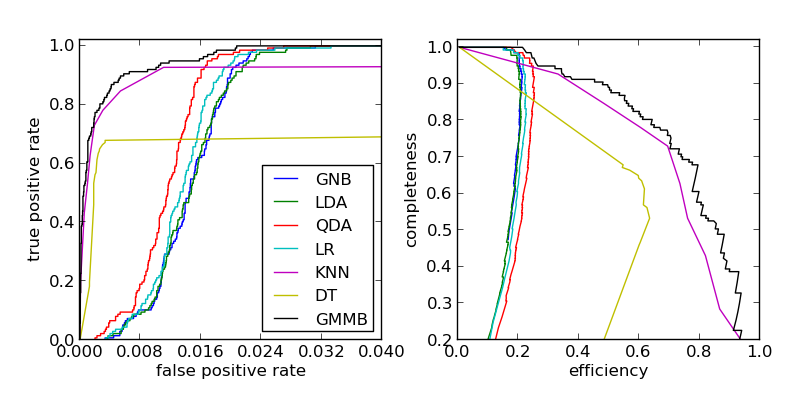

RR Lyrae ROC Curves¶
Plot Receiver Operating Characteristic (ROC) curves to compare several classification methods used in this chapter.
@pickle_results: using precomputed results from 'rrlyrae_ROC.pkl'
# Author: Jake VanderPlas <vanderplas@astro.washington.edu>
# License: BSD
# The figure produced by this code is published in the textbook
# "Statistics, Data Mining, and Machine Learning in Astronomy" (2013)
# For more information, see http://astroML.github.com
import numpy as np
from matplotlib import pyplot as plt
from sklearn.naive_bayes import GaussianNB
from sklearn.lda import LDA
from sklearn.qda import QDA
from sklearn.linear_model import LogisticRegression
from sklearn.neighbors import KNeighborsClassifier
from sklearn.tree import DecisionTreeClassifier
from astroML.classification import GMMBayes
from sklearn.metrics import precision_recall_curve, roc_curve
from astroML.utils import split_samples, completeness_contamination
from astroML.decorators import pickle_results
from astroML.datasets import fetch_rrlyrae_combined
#----------------------------------------------------------------------
# get data and split into training & testing sets
X, y = fetch_rrlyrae_combined()
y = y.astype(int)
(X_train, X_test), (y_train, y_test) = split_samples(X, y, [0.75, 0.25],
random_state=0)
#------------------------------------------------------------
# Fit all the models to the training data, and cache to disk
@pickle_results('rrlyrae_ROC.pkl')
def compute_models(*args):
names = []
probs = []
for classifier, kwargs in args:
print classifier.__name__
clf = classifier(**kwargs)
clf.fit(X_train, y_train)
y_probs = clf.predict_proba(X_test)[:, 1]
names.append(classifier.__name__)
probs.append(y_probs)
return names, probs
LRclass_weight = dict([(i, np.sum(y_train == i)) for i in (0, 1)])
names, probs = compute_models((GaussianNB, {}),
(LDA, {}),
(QDA, {}),
(LogisticRegression,
dict(class_weight=LRclass_weight)),
(KNeighborsClassifier,
dict(n_neighbors=10, warn_on_equidistant=0)),
(DecisionTreeClassifier,
dict(random_state=0, max_depth=12,
criterion='entropy')),
(GMMBayes, dict(n_components=3, min_covar=1E-5,
covariance_type='full')))
#------------------------------------------------------------
# Plot ROC curves and completeness/efficiency
fig = plt.figure(figsize=(8, 4))
fig.subplots_adjust(left=0.1, right=0.95, bottom=0.15, top=0.9, wspace=0.25)
# ax2 will show roc curves
ax1 = plt.subplot(121)
# ax1 will show completeness/efficiency
ax2 = plt.subplot(122)
labels = dict(GaussianNB='GNB',
LDA='LDA',
QDA='QDA',
KNeighborsClassifier='KNN',
DecisionTreeClassifier='DT',
GMMBayes='GMMB',
LogisticRegression='LR')
thresholds = np.linspace(0, 1, 1001)[:-1]
# iterate through and show results
for name, y_prob in zip(names, probs):
fpr, tpr, thresh = roc_curve(y_test, y_prob)
# add (0, 0) as first point
fpr = np.concatenate([[0], fpr])
tpr = np.concatenate([[0], tpr])
ax1.plot(fpr, tpr, label=labels[name])
comp = np.zeros_like(thresholds)
cont = np.zeros_like(thresholds)
for i, t in enumerate(thresholds):
y_pred = (y_prob >= t)
comp[i], cont[i] = completeness_contamination(y_pred, y_test)
ax2.plot(1 - cont, comp, label=labels[name])
ax1.set_xlim(0, 0.04)
ax1.set_ylim(0, 1.02)
ax1.xaxis.set_major_locator(plt.MaxNLocator(5))
ax1.set_xlabel('false positive rate')
ax1.set_ylabel('true positive rate')
ax1.legend(loc=4, prop=dict(size=12))
ax2.set_xlabel('efficiency')
ax2.set_ylabel('completeness')
ax2.set_xlim(0, 1.0)
ax2.set_ylim(0.2, 1.02)
plt.show()